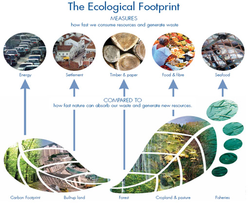

While higher life expectancy is leading to increase in population in developed
countries, lower life expectancy maybe caused by the booms in population that
less developed nations are experiencing. A large proportion of the world's population
growth occurs in less developed countries. This stretches the resources these countries
have thinner resulting in less access to medical care, fresh water, food and jobs, all
resulting in a fall in life expectancy. National LEB figures reported
by national agencies and international organizations for human populations are
indeed estimates of period LEB. Life expectancy is also used in plant or animal ecology
and in life tables(also known as actuarial tables).
Resource Consumption
As the population grows, so too does the amount of resources needed to keep
so many people alive. Food, water and fossil fuels are all being consumed ar
record rates, placing greayer demands on producers amd the planet itself.
Ironically, it is the discovery of many of these natural resources - particularly
fossil fuels that have contributed to conditions that are favourable to population
growth. A study has shown that the world's ecosystem changed more rapidly in the
latter-half of the 20th century than at any other point in history because of
increased use of these resources. Hence, its a major effect of overpopulation.

Faster Climate Change
Overpopulation directly correlates to climate change, particularly as larger
nations, like China and India, continue to develop their industrial capacities.
They now rank as two of the three largest contributors in the world alongside
The United States. 97% of the scientific community agrees that human activity
are changed global temperatures. Larger populations may speed these changes
up, especially if more is not done to reduce individuals carbon footprints on a
wide scale basis. Earth's climate is now changing than at any point in the history
of modern civilization, primarily as a result of human activities.